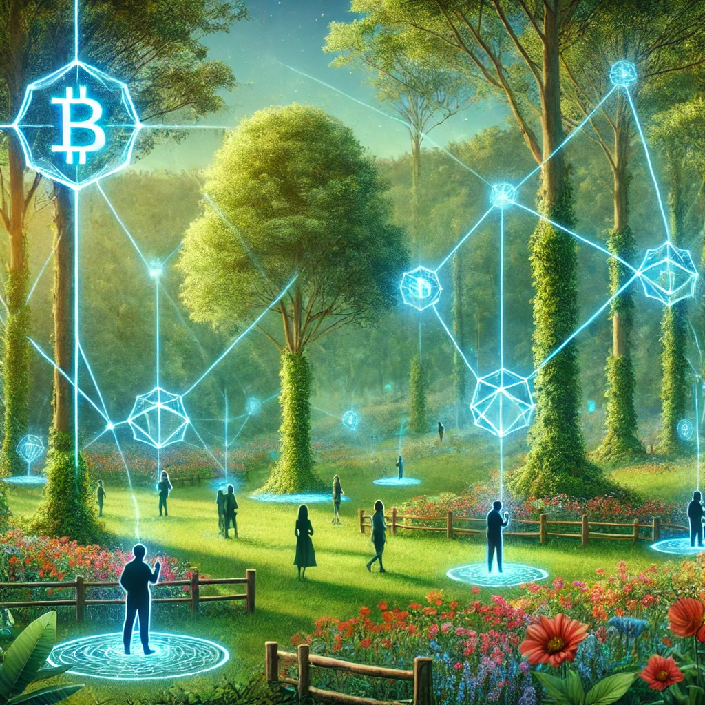

Et si les humains étaient des tokens ?

img crée par dall-e
C’est fou comme la crypto peut révéler des parallèles dingues avec la vie. Bon tu l'auras remarqué j'aime bien faire des parallèles 😉 Prends un token, par exemple. Nombre limité, valeur unique, dilution, disparition… et si on était pareils ? Des tokens vivants, avec nos vies en circulation ?
La rareté, c’est la clé
Un token, c’est rare. Et plus c’est rare, plus ça a de la valeur. Les humains, pareil. Chaque personne est unique, irremplaçable, et ça, c’est notre rareté. Mais voilà, comme les tokens, la valeur de chacun peut être oubliée dans la masse. Une surpopulation ou une standardisation des talents ? Et hop, dilution.
Dilution = naissance
Quand un projet crypto balance de nouveaux tokens sur le marché, la valeur par unité peut chuter. Chez nous, la dilution, c’est la naissance. Chaque nouveau-né ajoute de la richesse à l’ensemble, mais peut aussi diluer l’attention, les ressources, les opportunités. On n’y pense pas toujours, mais c’est là.
La mort et la rareté retrouvée
La disparition d’un token (burn) augmente souvent la valeur de ceux qui restent. Cruel, mais réel : c’est pareil pour nous. Une perte humaine rappelle l’importance de ce qu’on a encore. La mort redonne du poids à la vie, comme un signal pour ne pas oublier la rareté de l’existence et ceux qui restent.
Transactions humaines
Dans la crypto, on échange des tokens. Nous, on fait pareil. Chaque interaction, chaque émotion partagée, c’est une transaction. Tu donnes de toi, tu reçois, et tout ça alimente une sorte d’économie humaine.
Une blockchain humaine ?
Imagine… L’histoire collective, le savoir ancétral, c’est une blockchain. Chaque humain, un bloc unique qui laisse une trace, bonne ou mauvaise, dans cette grande chaîne. On contribue à l’ensemble avec nos choix, nos actes, nos erreurs. Fascinant, non ? Ou c'est moi derrière mon ordi qui délire 🤔
Et après ?
Comme les tokens peuvent être tokenisés pour l’éternité, nous aussi, on cherche à laisser une trace. Peut-être dans la mémoire des autres, à travers une invention, un outils ou un concept, peut-être dans le numérique. Une empreinte indélébile de notre valeur.
Réflexion libre
Alors, t’en dis quoi ? Peut-être qu’on est plus connectés à ces concepts que ce qu’on veut bien croire. On est rares, uniques, limités. Chaque vie est une transaction, chaque mort un rappel de l’essentiel. Et si, comme les tokens, on apprenait à mieux valoriser nos échanges, notre rareté et notre impact ?
Je te laisse cogiter. Parce qu’au final, tout comme un token, t’es éphémère mais infiniment précieux.